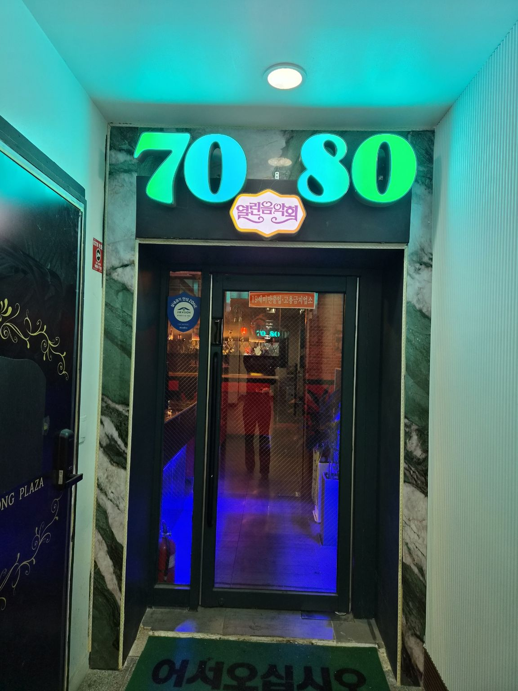

ABOUT US
음악으로 다시 만나는 그 시절
추억의 멜로디와 함께 일상에서 벗어나 여유로운 시간을 보내세요. 무대와 화려한 조명, 편안한 소파가 어우러진 열린음악회7080라이브입니다.
GROUP RESERVATIONS
정왕동 단체손님 환영
직장 회식 · 동창회 · 친목 모임 · 생일 모임
추억의 음악과 함께 특별한 모임을 즐겨보세요. 단체 인원, 방문 날짜 및 이용 가능 여부는 전화로 문의해 주세요.
단체 예약 문의OUR SPACE
매장 둘러보기
음악과 조명이 어우러진 공간

열린음악회7080라이브 간판을 확인하세요.

일공공일 안경점 위쪽의 7080 간판을 찾아주세요.
VISIT US
찾아오시는 길
열린음악회7080라이브 · 시흥
경기도 시흥시 정왕동 1882-8
정왕동을 중심으로 배곧, 안산, 화성, 수원 등 경기도에서 방문하시는 손님을 환영합니다.
전화 예약네이버 지도 검색19세 미만 출입 및 고용 금지 업소